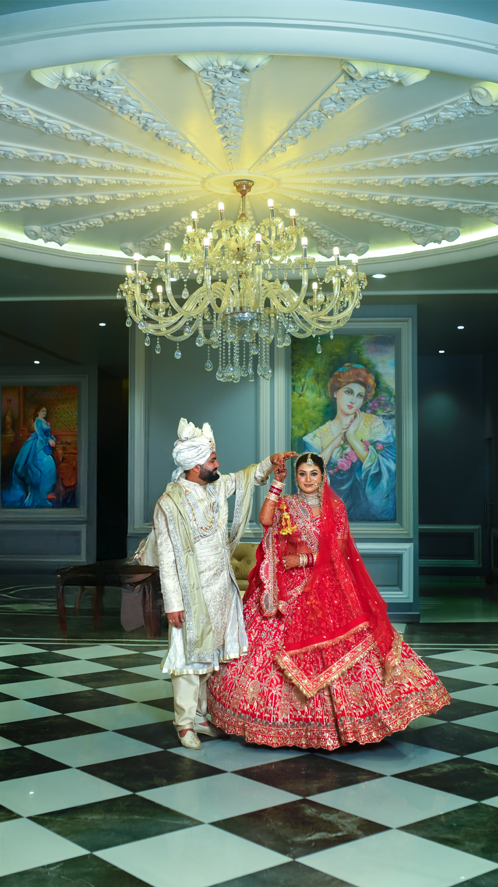
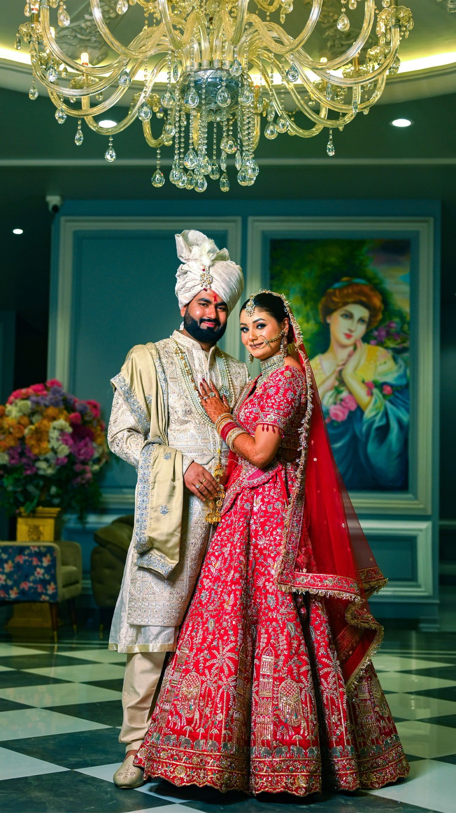
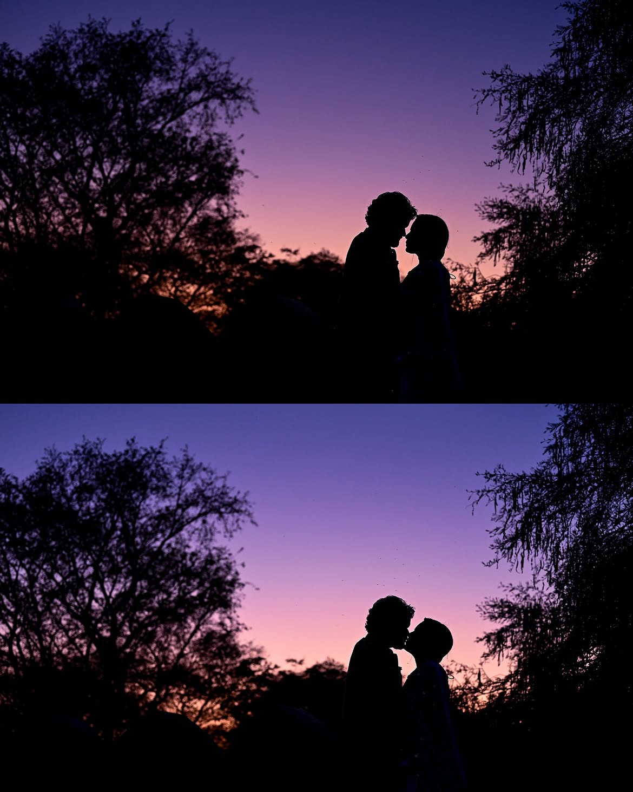
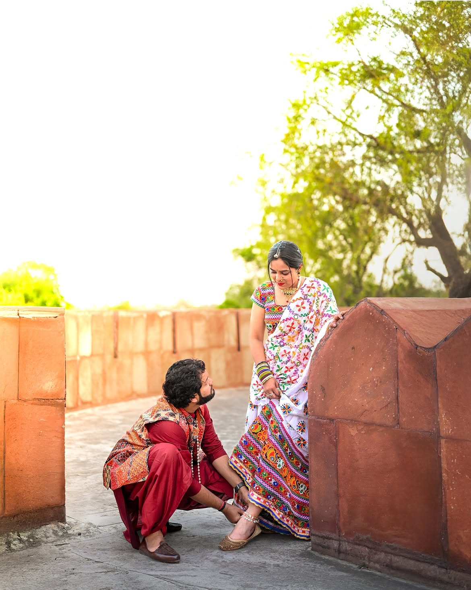

Photography
Documentary coverage across every ceremony, layered with directed portraits at golden hour.
Destination Wedding Photographers & Filmmakers
Est. 2016 — Photography & Film for the beautifully unscripted
View the Portfolio



We are a small collective of photographers and filmmakers who follow weddings across coastlines, palaces, and back gardens. No two ceremonies are staged the same way twice — we simply stay close, stay quiet, and keep the shutter ready for the moment before anyone says "smile."
Every film and frame is edited by the same two hands that shot it, so what you receive is a single point of view from first look to last dance.
Start a conversation →Documentary coverage across every ceremony, layered with directed portraits at golden hour.
Cinematic edits scored to sound, built to feel like memory rather than highlight reel.
Full-team travel to your chosen city or shoreline — logistics handled quietly, in advance.
Beneath crystal chandeliers and portraits older than the building itself, two families became one across three days of ceremony. This is one of our favourite chapters — quiet mornings, loud celebrations, and a bride who never once stopped laughing.
Read the full story →Some weddings ask for grandeur; this one asked for a horizon. We chased the last light between two trees until the sky turned the exact colour of the bride's dupatta.
Read the full story →A wedding film is the closest thing to time travel we know how to offer. Press play, turn the sound up, and let the room get loud again.
They disappeared into the background and somehow captured every single feeling we didn't know we were having. Watching the film back felt like living the day twice.
— A Bride, Udaipur